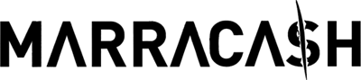

Tutto su Marracash
La sua storia

Fabio Bartolo Rizzo, in arte Marracash, è nato il 22 maggio 1979 a Nicosia, un paese della Sicilia.
Insieme alla famiglia si è trasferito a Milano e fino all'età di 10 anni ha vissuto in una casa di ringhiera, una tipica casa caratterizzata dalla presenza di un unico balcone per piano, condiviso da chi abitava in quest'ultimo. Nella sua casa vivevano anche dei con colleghi di suo padre che come lavoro faceva il camionista.
Ottiene il diploma di perito tecnico finendo così la scuola secondaria di secondo grado.
La sua carriera
L'esordio
 |
Inzia la sua carriera con lo pseudonimo di Juza delle Nuvole, comparendo nella demo The Royal Rumble del 1999 di Prodigio insieme ad altri rapper come Jake La Furia, Guè Pequeno, Vincenzo da Via Anfossi e Dargen D'Amico.
Fabio decide di adottare il nome d'arte Marracash solo successivamente dato che, sin da piccolo, avendo il viso ben marcato, gli altri bambini gli diedero l'appellativo di "marocchino". |
Collaborazione con Club Dogo
Nel 2002, prende parte al gruppo Club Dogo, composto anche da Jake La Furia, Guè Pequeno e DJ producer Don Joe; rimane all'interno del gruppo dal 2004 al 2007, pubblicando 2 album con loro.
Il gruppo continua a pubblicare altri 7 album fino al 2015, tutti di genere hip hop; nel 2023 hanno annunicato un loro nuovo tour nei palazzetti, riportando in vita i loro vecchi successi.
Inizio carriera da solista
Il 13 giugno 2008 esce il primo disco Marracash da solista del rapper, con le basi prodotte da Don Joe e Deleterio e con la presenza di collaborazioni con Guè, J-Ax, Vincenzo da Via Anfossi, Jake La Furia e i Co'Sang.
Nel 2008 realizza anche la sigla musicale della trasmissione radiofonica di Radio Deejay Pinocchio.
Nel 2009 partepica insieme ad altri 55 cantanti italiani (tra cui anche Zucchero ed Elisa), alla realizzazione di Domani 21/04/2009, brano pubblicato in via benefica per ricordare le vittime colpite dal Terremoto dell'Aquila del 2009.
Negli anni successivi, pubblica altri 5 album:
- King del Rap (2011)
- Status (2013)
- Santeria, in collaborazione con Guè (2016)
- Persona, dove partecipano diversi artisti, tra cui Salmo ed Elodie (2019)
- Noi, loro, gli altri, dove sono presenti collaborazioni anche con Fabri Fibra e Calcutta (2021)
E' un festival tenuto dal rapper in sole 2 date:
- 23 settembre 2023 a Milano
- 30 settembre 2023 a Napoli